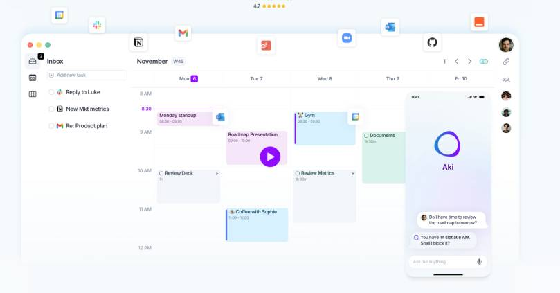
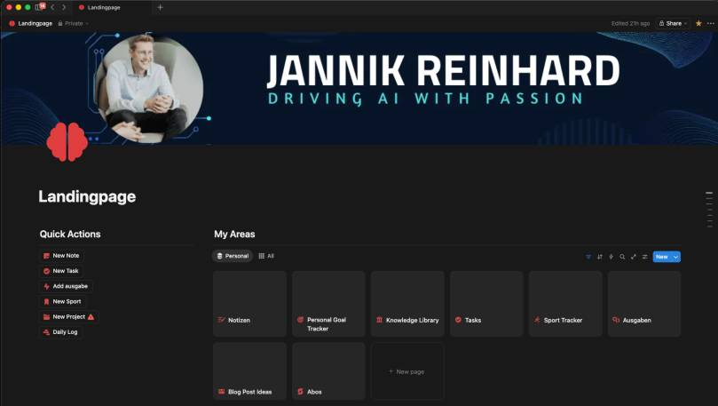
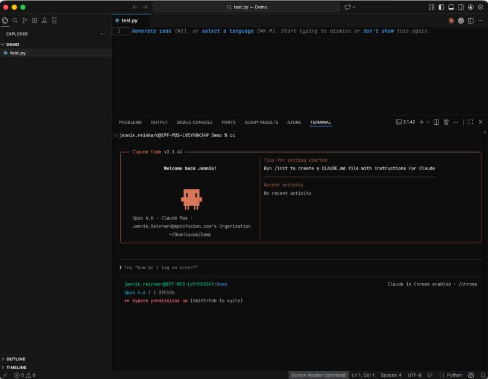
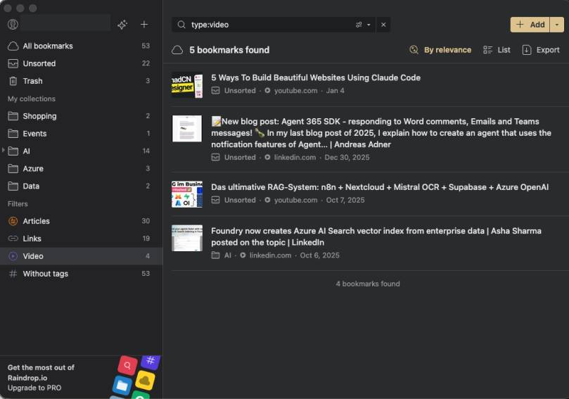
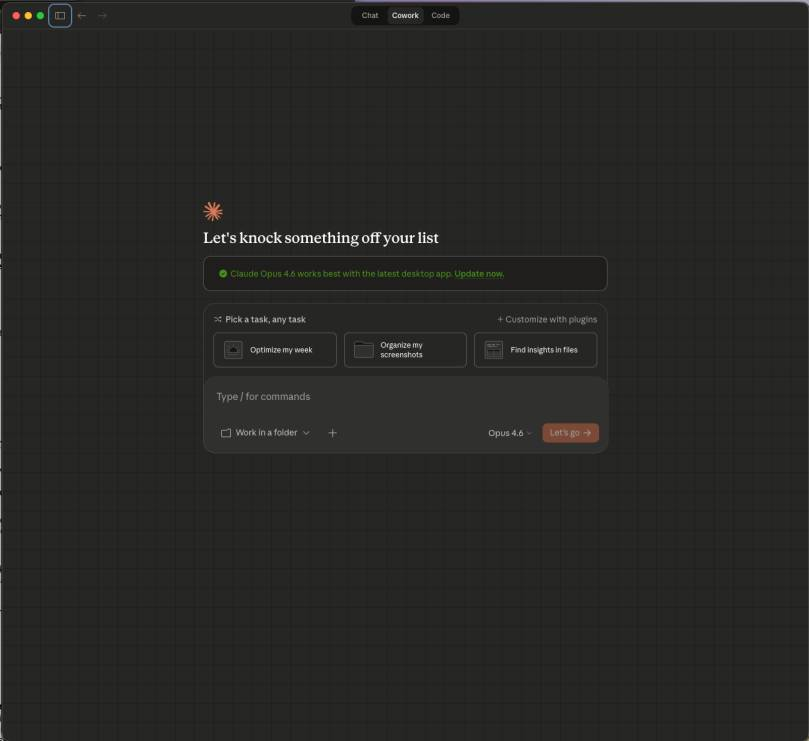

There’s a question I get asked very often: “What tools do you actually use every day?”
These are the ones I personally rely on to stay productive and creative — and if you use AI in your workflow too, my guide on prompt engineering is a good place to start.
So here it is – my complete daily toolkit, broken down by what each tool actually does for me and why I chose it over the alternatives.

Planning & Task Management: Akiflow
Every morning starts the same way: I open Akiflow and plan my day.
Akiflow is a daily planner that pulls tasks from many integrations into one universal inbox. The core idea is simple – instead of checking many calendars, tasks in Notion, and five other apps to figure out what needs to happen today, everything flows into one place. From there, I drag tasks into my calendar as time blocks.
What makes Akiflow different from a regular to-do list is the speed. It’s keyboard-first. Hit Cmd+K, type what you need, and you’re done. No clicking through menus, no switching apps. Once you go keyboard-driven, you can’t go back.
The feature that sold me though is the WhatsApp integration. I get messages from clients, partners, and team members on WhatsApp constantly. With Akiflow, I can turn any WhatsApp message into a task with one tap – it lands in my inbox, I time-block it, and it doesn’t get lost in the chat scroll. For someone who works across multiple time zones and communication channels, this is a game changer. No more “I forgot to follow up on that message from last week.”
I pair Akiflow with a simple daily ritual: 10 minutes in the morning to process the inbox and block my calendar, 5 minutes in the evening to review what got done and push unfinished items to tomorrow.

Knowledge & Notes: Notion
Notion is my long-term brain. While Akiflow handles what I need to do today, Notion stores everything I know and need to remember or everything to track and organize myself.
I use it for blog post drafts, conference talk outlines, finance and goals tracking, project documentation, meeting notes, and personal knowledge management. The database feature is incredibly powerful – and also the integration into other tools like Akiflow or n8n.
The key to making Notion work is not trying to build the perfect system upfront. I started with a simple page for notes and let the structure grow organically. Today it’s more structured, but it only got that way because I used it daily and refined what I actually needed.

Voice Input: Wispr Flow
This is the tool that changed how I create content or interact with my PC. Wispr Flow is an AI-powered voice-to-text tool that works in every app on your Mac, Windows, or iPhone. You press a hotkey, start talking, and it transcribes your speech into clean, formatted text – automatically removing filler words, fixing grammar, and even adjusting tone based on the app you’re in.
I use it everywhere: drafting emails, writing messages and prompts, creating blog post first drafts, and many more. The speed difference is real – speaking is roughly 4x faster than typing and usually feels more natural, and Wispr Flow’s AI editing means the output is usually ready to send with minimal cleanup.
What I particularly like is the context awareness. When I’m dictating in Teams, it keeps the tone casual. When I’m writing an email, it’s more professional. And it works in German and English seamlessly, which is essential for me since I switch between both constantly.
The personal dictionary feature learns your vocabulary over time. It now knows technical terms like “Intune,” “Entra ID,” and “Conditional Access” without me having to spell them out. Another nice feature: it can replace words. For example, when I say “on my webpage,” it replaces it with jannikreinhard.com.
Coding: VS Code + Claude Code CLI (and Codex for Challenges)
My development setup is VS Code with Claude Code via the CLI. Not the VS Code extension – the CLI directly in my terminal.
Why the CLI over the extension? Two reasons. First, the extension is still evolving and I’ve found it can be buggy at times. The CLI is more stable. Second, the keyboard-driven workflow fits how I work. Double-ESC to edit any previous message, instant context rewind, and lightweight resource usage compared to running another extension in VS Code.
My typical workflow: I open VS Code for the editor and file navigation, then run cc (I put an alias for claude –dangerously-skip-permissions) in the integrated terminal. I describe what I need – a new API endpoint, a Graph API integration, a PowerShell automation script – and Claude writes the code, shows me the diff, and I review and accept. For complex tasks Claude Code handles multi-file changes across entire codebases that would take me hours / weeks to do manually.
I also use OpenAI’s Codex as a second opinion and challenge tool. When Claude Code generates a solution, I sometimes run the same task through Codex to compare approaches or let it review what Claude did. It’s like having two senior developers with different perspectives. The competition between the two keeps the quality high – when one tool misses something, the other often catches it.

Link Management: Raindrop.io
Every knowledge worker has the same problem: you find something useful on the web or LinkedIn, bookmark it, and never find it again. Edge bookmarks are a graveyard.
Raindrop.io replaced my entire bookmarking system. It’s a bookmark manager that treats your saved links as a searchable database rather than a folder tree. I save articles, documentation pages, GitHub repos, tools, and reference material into themed collections – “Azure AI,” “Intune Scripts,” “Conference Talks,” “Content Ideas.”
The full-text search is what makes it actually useful. Raindrop caches the content of every page you save, so you can search not just titles and URLs but the actual content. When I vaguely remember reading something about a specific Graph API endpoint six months ago, I can find it in seconds.
I use the browser extension to save with one click, add tags, and move on. The mobile app lets me save things I find while scrolling on my phone. And the Pro plan’s permanent library means even if a page goes offline, I still have access to it.

Password Management: Bitwarden
No tool roundup is complete without a password manager, and mine is Bitwarden. Open source, cross-platform, and easy if you want to go that route.
I chose Bitwarden over alternatives for a few reasons: it works on every platform and browser I use, the autofill is reliable, and I trust the open-source model. It still works, I tried many different solutions but for me this is the best.
AI Assistant: Claude Desktop
For everything that doesn’t fit into a specific category – brainstorming, research, writing assistance, data analysis, quick questions, consulting – Claude Desktop is my go-to.
I use it as my daily co-worker. Need to draft an abstract? Claude. Analyze a complex JSON response from an API? Claude. Translate a technical document from English to German while keeping the technical terminology accurate? Claude. Review a blog post draft and suggest improvements? Claude.
What makes the desktop app particularly useful is that it’s always there. It’s not a browser tab I have to find – it’s an app I can summon with a keyboard shortcut. Combined with Wispr Flow for voice input, I can literally talk to Claude while walking around my office and get polished, thoughtful responses back.
I can double-tap the option key and a quick bar opens. It is so easy and simple.
The combination of Claude Desktop for thinking and Claude Code for building is powerful. I’ll often start by discussing ideas in Claude Desktop, then switch to Claude Code to implement them.
Also, Claude’s co-work feature is on a whole other level for delegating my tasks.

Health & Recovery: WHOOP
This one might seem out of place in a tech tools post, but it’s become essential to my productivity.
The WHOOP band tracks sleep, recovery, and strain 24/7. Every morning it gives me a recovery score that tells me how ready my body is for the day ahead. If my recovery is low, I know to start with lighter work – reviews, emails, planning. If it’s high, that’s when I tackle complex coding sessions, deep writing, or prepare for conference talks.
The data over time has been eye-opening. I can see exactly how late-night coding sessions affect my recovery the next day, how travel impacts my sleep quality, and which habits actually improve my performance. It’s turned health from something I vaguely think about into something I can optimize with real data.
E.g., when I notice I haven’t had enough physical activity during the day, I take out my walking pad and walk during my coding session. This helps me hit my step goal and also gets more blood flowing to my head. It’s a real game changer.
For anyone in a high-performance knowledge work role, understanding your body’s capacity is just as important as having the right software tools.
How It All Fits Together
The real power isn’t in any single tool – it’s in how they connect:
My day starts with WHOOP telling me how recovered I am, which informs how I plan my day in Akiflow. Tasks come in from Teams, email, Notion – all landing in Akiflow’s inbox. Long-term projects and documentation live in Notion. When I create content, Wispr Flow lets me speak my first drafts at 4x typing speed. Development happens in VS Code + Claude Code CLI, with Codex as a challenger. Claude Desktop handles everything else and in between – research, brainstorming, analysis. Interesting links and resources get saved to Raindrop.io for future reference. And Bitwarden keeps everything secure.
No single tool is perfect. But the combination of these eight tools covers my entire workflow – from health tracking to task management to coding to content creation. Each tool does one thing well and stays out of the way for everything else.
For the rest I try to use all the out-of-the-box tools from Microsoft and Apple. I also sorted out a lot of tools like ChatGPT and Gemini as well as my Apple Watch because it is too much of a distraction and the app is not good, and many more.
I am a big fan of keeping things simple. The best productivity system is the one you actually use. These are the tools I open every single day, not the ones that looked cool for a week and then got abandoned. Try them, adapt them, and build your own stack that fits how you work.
If you are interested in learning more about my tech setup, let me know and I am happy to also draft a blog about this. If you want to go deeper into how I think about tools for AI workflows, you might also like CLI Tools vs MCP: Better AI Agents With Less Context.